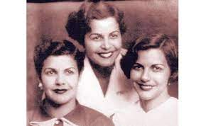
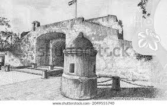

Hermanas Mirabal
Las hermanas Mirabal, también conocidas como Las Mirabal o Las Mariposas, fueron tres hermanas dominicanas que se opusieron a la dictadura de Rafael Leónidas Trujillo. Patria, Minerva y María Teresa Mirabal fueron asesinadas el 25 de noviembre de 1960. Patria Mirabal Patria Mirabal nació el 27 de febrero de 1924 en Ojo de Agua, Salcedo, República Dominicana. Fue la mayor de las tres hermanas. Se casó con Pedro González y tuvo tres hijos. Patria fue una de las primeras mujeres en unirse al movimiento clandestino contra Trujillo. Participó en la distribución de propaganda y en la recaudación de fondos para la resistencia. Minerva Mirabal Minerva Mirabal nació el 12 de marzo de 1926 en Ojo de Agua, Salcedo, República Dominicana. Fue la segunda de las tres hermanas. Se casó con Manolo Tavárez Justo y tuvo dos hijos. Minerva fue una de las líderes más destacadas del movimiento clandestino contra Trujillo. Fue una abogada brillante y una oradora elocuente. María Teresa Mirabal María Teresa Mirabal nació el 1 de febrero de 1935 en Ojo de Agua, Salcedo, República Dominicana. Fue la menor de las tres hermanas. Se casó con Leandro Guzmán y tuvo una hija. María Teresa fue una de las más activas participantes del movimiento clandestino contra Trujillo. Era una mujer alegre y extrovertida, y su carisma ayudó a atraer a más personas a la causa. El asesinato de las hermanas Mirabal fue un evento que conmocionó a la República Dominicana y al mundo entero. Se convirtió en un símbolo de la lucha contra la dictadura y ayudó a acelerar su caída. Las hermanas Mirabal fueron declaradas heroínas nacionales de la República Dominicana en 1992. Su historia ha sido contada en libros, películas y obras de teatro. Su legado sigue inspirando a personas en todo el mundo a luchar por la democracia y los derechos humanos.
Los Padres de la Patrias
Juan Pablo Duarte Juan Pablo Duarte y Díez nació el 26 de enero de 1813 en Santo Domingo. Fue el principal líder de la independencia dominicana y el fundador de la sociedad secreta La Trinitaria. Duarte se formó en la Escuela Normal de Santo Domingo y en la Universidad de Santo Tomás. Desde su juventud, se interesó por la política y la libertad de su país. En 1838, fundó La Trinitaria, una sociedad secreta que tenía como objetivo la independencia de la República Dominicana. Duarte fue un líder carismático y visionario. Convenció a otros jóvenes de su generación a unirse a la lucha por la independencia. La Trinitaria se expandió rápidamente y se convirtió en una fuerza importante en la política dominicana. En 1844, Duarte proclamó la independencia de la República Dominicana. Sin embargo, el gobierno español recuperó el control del país en 1844. Duarte tuvo que exiliarse en Curazao y Haití. Duarte regresó a la República Dominicana en 1848. Sin embargo, fue encarcelado por el gobierno de Pedro Santana. En 1850, Duarte fue exiliado a Venezuela. Duarte murió en Caracas, Venezuela, el 15 de julio de 1876. Su legado sigue siendo un símbolo de la lucha por la independencia y la democracia en la República Dominicana. Matías Ramón Mella Matías Ramón Mella Castillo nació el 25 de febrero de 1816 en Santo Domingo. Fue un militar y político dominicano que desempeñó un papel importante en la independencia de la República Dominicana. Mella se formó en la Escuela Normal de Santo Domingo y en la Universidad de Santo Tomás. Desde su juventud, se interesó por la política y la libertad de su país. En 1838, se unió a La Trinitaria, una sociedad secreta que tenía como objetivo la independencia de la República Dominicana. Mella fue un militar talentoso. En 1844, lideró el ataque al cuartel de Santo Domingo, conocido como el "Trabucazo". Este evento marcó el inicio de la guerra de independencia dominicana. Mella fue un miembro del gobierno provisional de la República Dominicana. En 1844, fue nombrado comandante en jefe del ejército dominicano. Mella murió en Santo Domingo el 4 de junio de 1864. Su legado sigue siendo un símbolo de la lucha por la independencia y la democracia en la República Dominicana. Francisco del Rosario Sánchez Francisco del Rosario Sánchez nació el 9 de marzo de 1817 en Santo Domingo. Fue un político y diplomático dominicano que desempeñó un papel importante en la independencia de la República Dominicana. Sánchez se formó en la Escuela Normal de Santo Domingo y en la Universidad de Santo Tomás. Desde su juventud, se interesó por la política y la libertad de su país. En 1838, se unió a La Trinitaria, una sociedad secreta que tenía como objetivo la independencia de la República Dominicana. Sánchez fue un político carismático y elocuente. En 1844, fue nombrado secretario del gobierno provisional de la República Dominicana. Sánchez fue un líder importante en la lucha por la independencia dominicana. En 1845, lideró la resistencia dominicana contra la invasión haitiana. Sánchez murió en Santo Domingo el 4 de julio de 1861. Su legado sigue siendo un símbolo de la lucha por la independencia y la democracia en la República Dominicana. Estos tres hombres son conocidos como los "Padres de la Patria" de la República Dominicana. Su lucha por la independencia es un ejemplo de la determinación y el sacrificio que los dominicanos han demostrado a lo largo de su historia.

Puerta del Conde
La Puerta del Conde es un monumento histórico ubicado en la ciudad de Santo Domingo, República Dominicana. Es una de las puertas de acceso a la antigua ciudad amurallada, y fue escenario de la proclamación de la independencia dominicana el 27 de febrero de 1844. La Puerta del Conde fue construida en el siglo XVII, durante el período de dominio español. Originalmente, se llamaba Bastión de San Genaro, y era una de las tres puertas principales de la ciudad amurallada. En 1844, la Puerta del Conde fue el escenario de la proclamación de la independencia dominicana. El general Francisco del Rosario Sánchez, uno de los Padres de la Patria, subió a la puerta y izó la bandera dominicana. Desde entonces, la Puerta del Conde se ha convertido en un símbolo de la independencia dominicana. Es un lugar de peregrinación para los dominicanos, y es un recordatorio de la lucha por la libertad del país. Una historia sobre la Puerta del Conde Era una noche oscura y fría de febrero de 1844. El general Francisco del Rosario Sánchez y un grupo de patriotas se reunieron en secreto en la Puerta del Conde. Estaban planeando la proclamación de la independencia dominicana. Sánchez era un hombre valiente y decidido. Estaba decidido a liberar a su país del dominio español. Había estado trabajando en secreto durante años para organizar la revolución. Esa noche, Sánchez y sus compañeros patriotas decidieron que era hora de actuar. Se reunieron en la Puerta del Conde y comenzaron a preparar la proclamación de la independencia. Sánchez subió a la puerta y izó la bandera dominicana. Luego, pronunció un discurso en el que proclamó la independencia de la República Dominicana. El discurso de Sánchez fue un momento histórico. Fue el comienzo de una nueva era para la República Dominicana. La Puerta del Conde es un monumento importante en la historia de la República Dominicana. Es un recordatorio de la lucha por la libertad del país, y es un símbolo de la esperanza y la determinación del pueblo dominicano.
